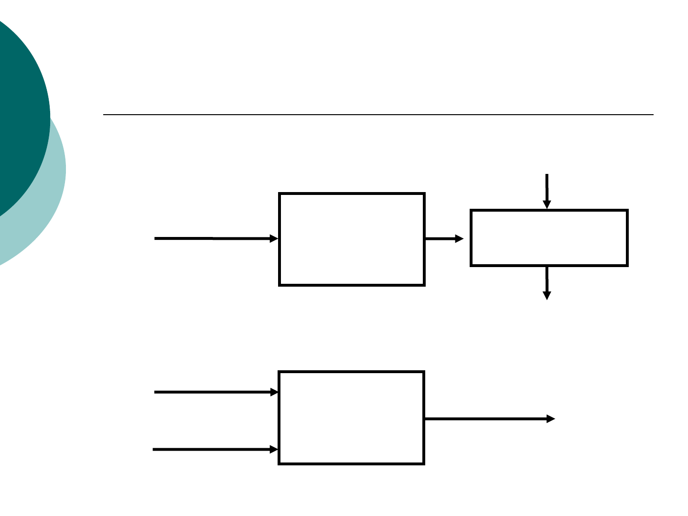
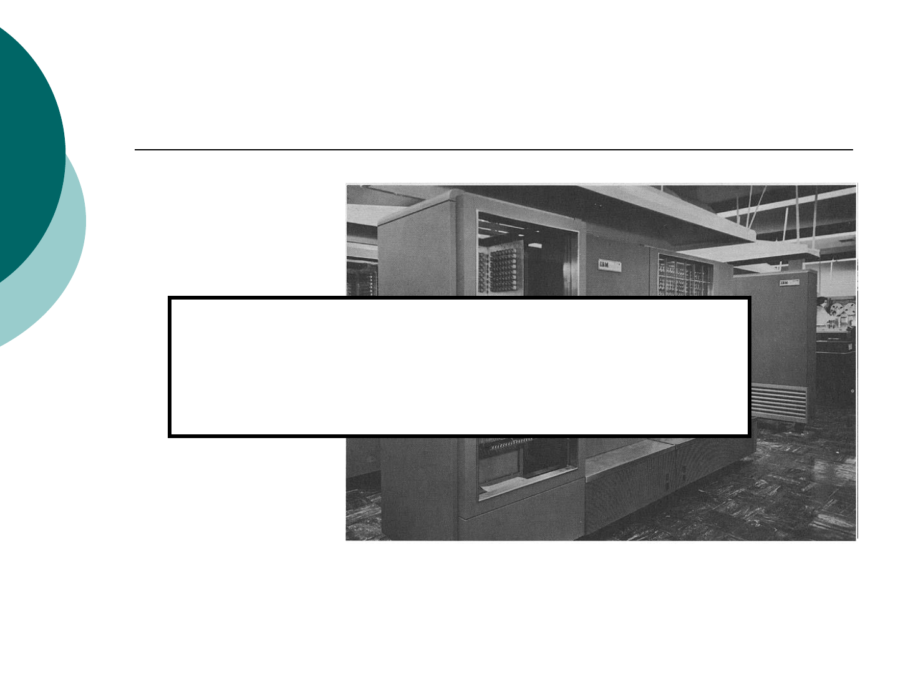
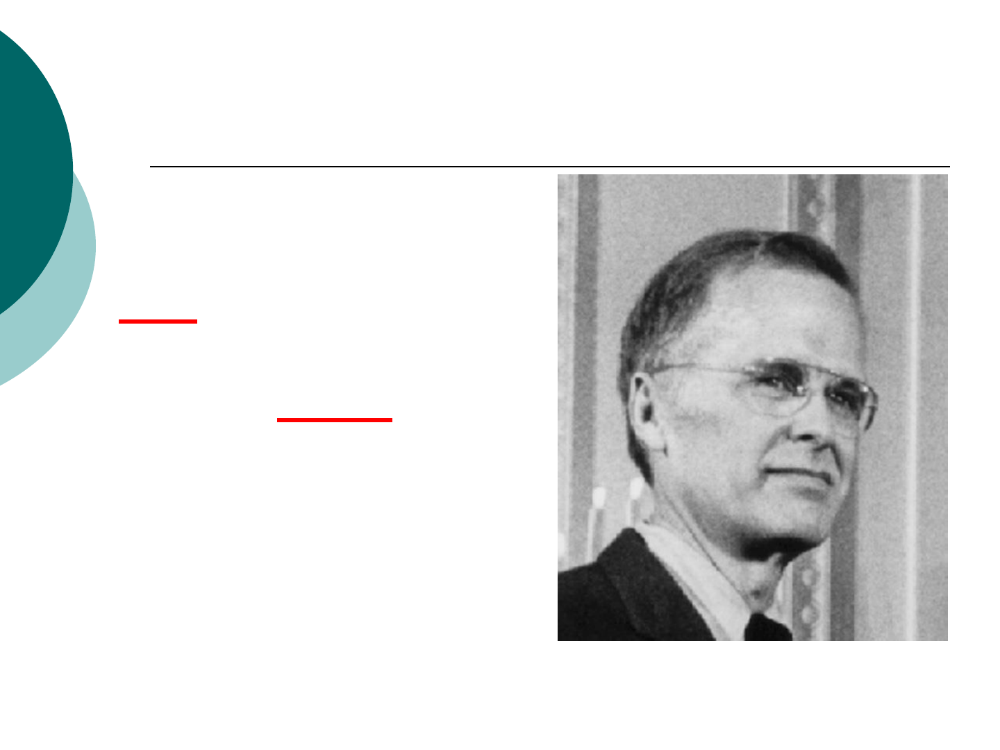
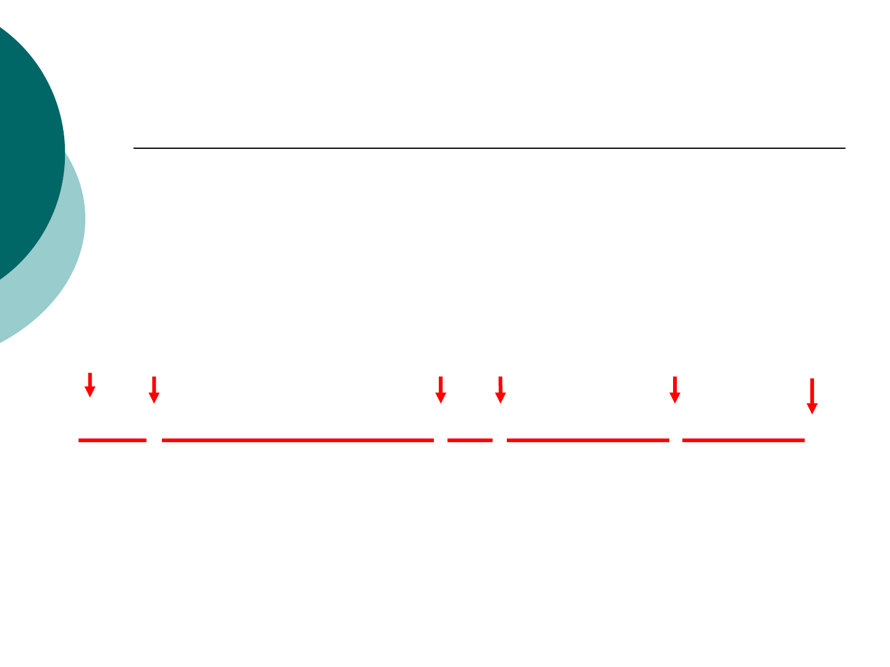
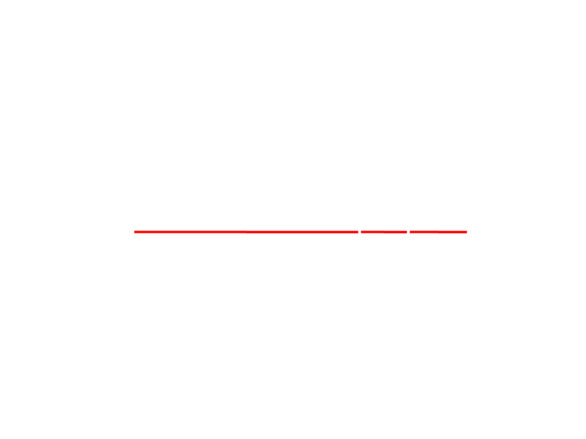
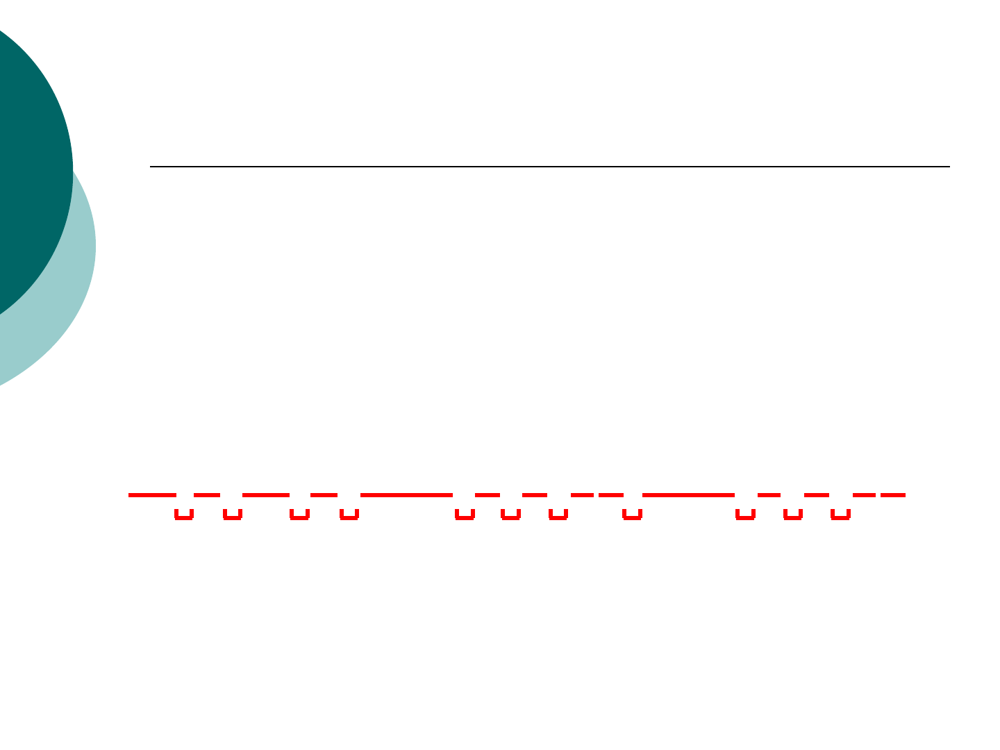
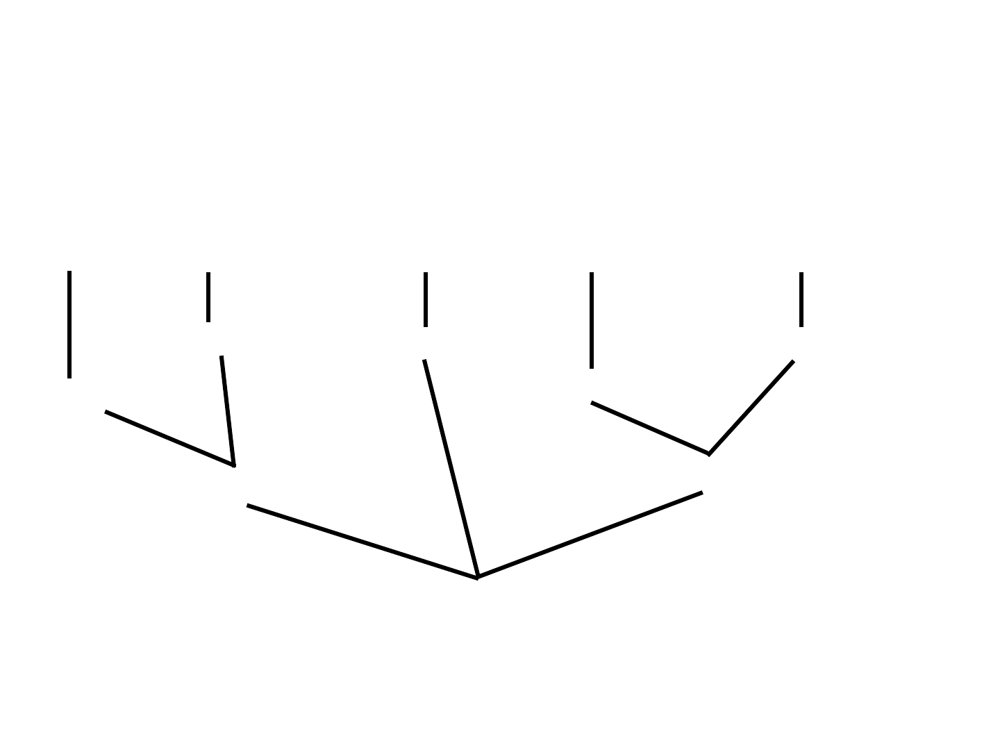
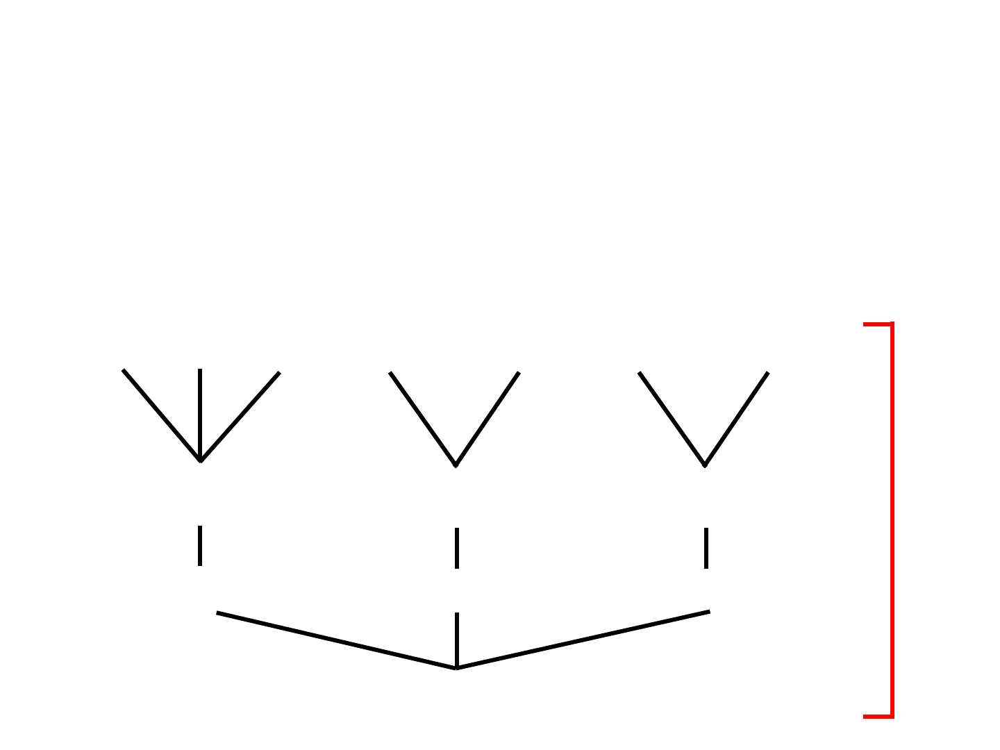
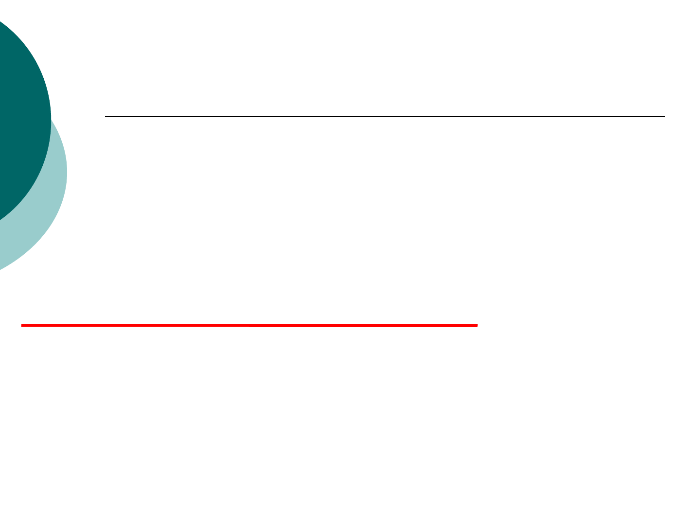
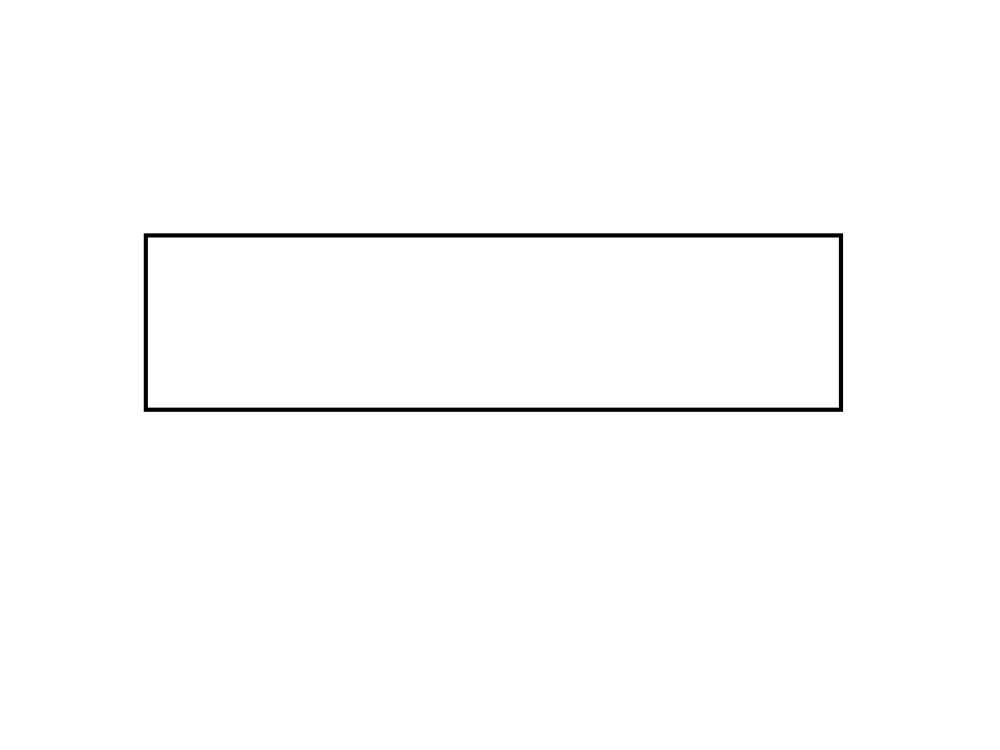

Введение
в теорию компиляторов

Введение в теорию компиляторов
Программа
Исходные
данные
Результаты
выполнения

Трансляторы
Транслятор — программа или
техническое средство,
выполняющее
трансляцию программы.
Трансляция программы —
преобразование программы,
представленной на одном
из языков программирования,
в программу на другом языке и, в
определѐнном смысле,
равносильную первой.

Трансляторы
Компиляторы
Интерпретаторы
I
Программа
Исходные
данные
Результаты
выполнения
С
Программа
Исполняемый
модуль
Исходные
данные
Результаты
выполнения

История трансляторов
1954 г.
IBM 704
Программное обеспечение
Аппаратное обеспечение
>
История трансляторов
Джон Бэкус
Speedcode (Speedcoding)
Первый интерпретатор
Первый язык высокого уровня
для компьютеров IBM
В 10–20 раз
медленнее
310
машинных
слов
(30%)

История трансляторов
Джон Бэкус
FORTRAN I
Formulas
Translated
1954–1957 гг.
1958 г. 50% программ

FORTRAN I
Первый компилятор.
Привѐл к активному развитию
теории компиляторов.
Современные компиляторы имеют
структуру, аналогичную
FORTRAN I.

Структура компилятора
1. Лексический анализ.
2. Синтаксический анализ (парсинг).
3. Семантический анализ.
4. Оптимизация.
5. Генерация кода.

Структура компилятора
Шаг 1: распознавание слов
наименьшая единица программы
после букв
Это предложение на русском языке.

пре длож е ниел иэ то

Структура компилятора
На этапе лексического анализа
программа разбивается
на «слова» — токены.
if x == y then z = 1; else z = 2;

Структура компилятора
Шаг 2:
понимание структуры предложения
Парсинг (синтаксический анализ)

Этот текст является простым предложением
местоимение
существительное
глагол существительное
субъект
объект
прилагательное
предложение

if x == y then z = 1; else z = 2;
if-then-else
предикат then-блок else-блок
x == y
отношение
присваивание
z 1
присваивание
z 2

Структура компилятора
Шаг 3:
понимание смысла предложения
Это сложно!
Компиляторы выполняют
ограниченный
семантический анализ:
обнаружение несоответствий

Алиса сошла со сцены,
и на неѐ посыпалось конфетти.

{
int Alice = 3;
{
int Alice = 4;
printf("%d", Alice);
}
}

Структура компилятора
Компиляторы выполняют
различные проверки.
Пример:
«Type mismatch» между словами
Алиса и забыл.
Алиса забыл свою книгу дома.

Структура компилятора
Шаг 4: оптимизация.
Не имеет аналога в естественных
языках.
Похожая операция — правка текста.
Автоматическое изменение программ
таким образом, чтобы они:
выполнялись быстрее;
использовали меньше памяти.
На следующий день после среды пошѐл дождь.
В четверг

x = y * 0;
x = 0;
Такое правило
верно не всегда!
Верно для целочисленных типов.
Неверно для вещественных типов.

Структура компилятора
Шаг 5: генерация кода
Перевод на другой язык.

Языки программирования
Почему создано так много
языков программирования?
Почему создаются новые
языки программирования?
Какой язык программирования —
хороший?

Языки программирования
Почему создано так много
языков программирования?
Почему создаются новые
языки программирования?
Какой язык программирования —
хороший?
Языки программирования
Разнообразие предметных областей.
Научные
вычисления
Хорошая поддержка
вещественных типов.
Хорошая поддержка
массивов.
Параллелизм.
Бизнес-задачи
Устойчивость к ошибкам.
Генерация отчѐтов.
Анализ данных.
Системное
программирование
Управление ресурсами.
Ограничения по скорости.

Языки программирования
Почему создано так много
языков программирования?
Почему создаются новые
языки программирования?
Какой язык программирования —
хороший?

Языки программирования
Обучение программистов —
самый большой вклад
в стоимость языка.
1. Широко используемые языки
изменяются медленно.
2. Проще создать новый язык.
3. Новые языки обеспечивают решение
новых задач.
4. Новые языки похожи на старые.
Языки программирования
Почему создано так много
языков программирования?
Почему создаются новые
языки программирования?
Какой язык программирования —
хороший?

Языки программирования
Нет общепринятых способов
оценки языков программирования.
Вопросы?